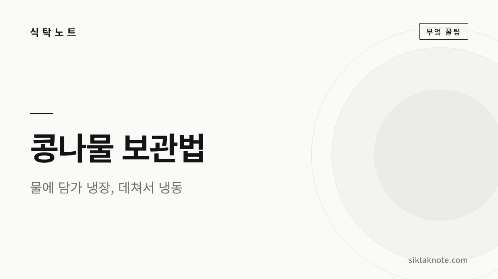
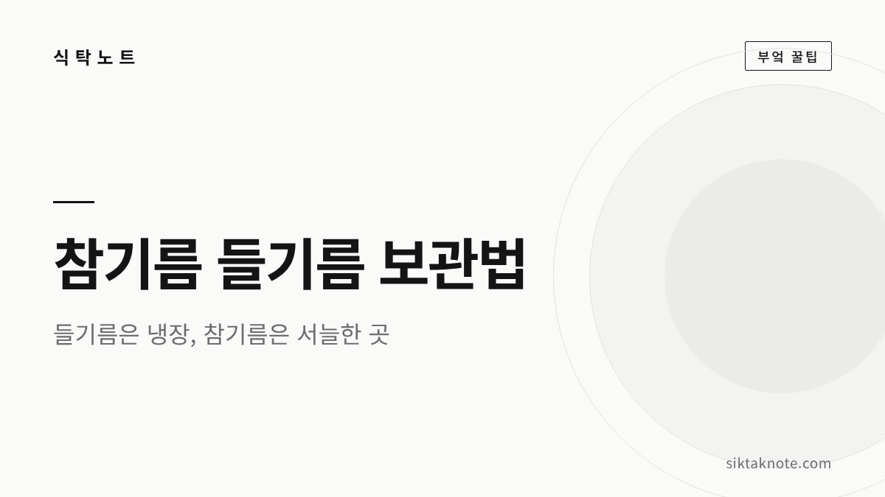
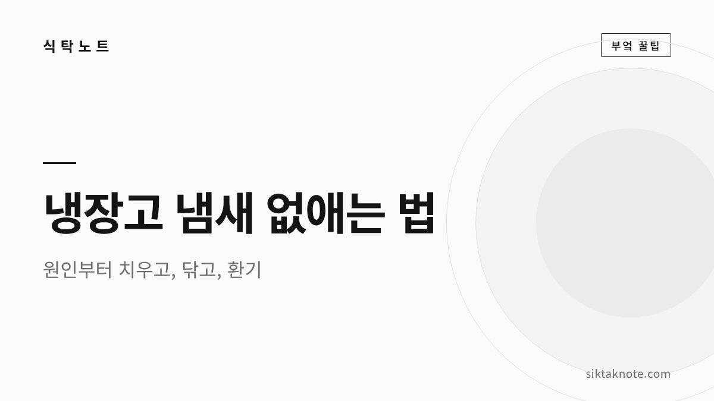
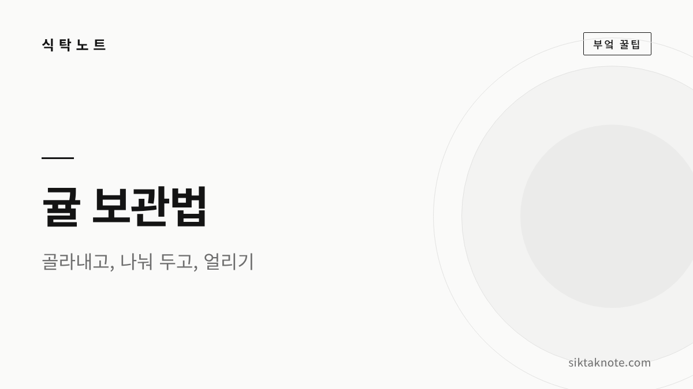
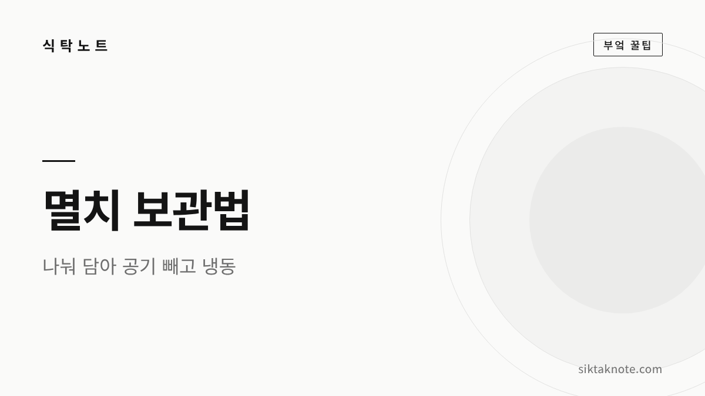
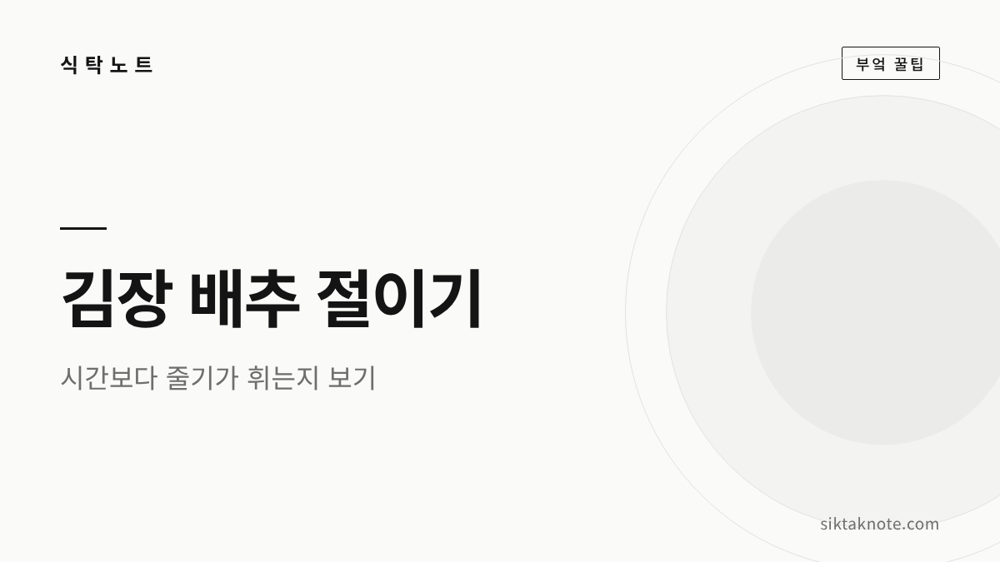

Kitchen · Local · Stories
밥상 위의 작은 궁금증,
같이 풀어봐요
떡이 딱딱해져서 막막했던 순간의 해결법부터, 밥상에서 시작해 우리 지역 곳곳으로 떠나는 축제 소식과 맛 이야기, 옛이야기까지 쉽고 따뜻하게 모았습니다.

- 출처를 확인한 정보
- 바로 따라 하는 방법
- 밥상에서 지역까지

에밀레종 전설 — 성덕대왕신종에 얽힌 이야기와 과학이 밝힌 사실
아이를 넣어 만들었다는 에밀레종 전설, 한 번쯤 들어 보셨죠. 성덕대왕신종이 만들어진 역사와 비천상, 맥놀이, 성분 분석으로 확인된 사실까지 한국민족문화대백과사전과 국립경주박물관 조사 보도를 바탕으로 차근차근 정리했습니다.

전주 콩나물국밥 이야기 — 남부시장식과 끓이는 식, 수란과 모주까지
전주에 가면 아침 한 그릇으로 꼭 찾게 되는 콩나물국밥 이야기인데요. 1929년 잡지에 실린 '탁백이국'부터 남부시장식과 끓이는 식의 차이, 수란과 모주를 곁들이는 법까지 백과사전과 관광공사 자료로 확인해 담았습니다.

오대산 상원사 문수동자와 세조 이야기 — 계곡에서 등을 밀어 준 아이, 목숨을 구한 고양이
오대산 상원사에는 세조가 계곡에서 문수동자를 만나 피부병을 고쳤다는 전설이 전해지는데요. 관대걸이와 고양이 석상 이야기, 실록과 국보 문수동자상·동종으로 확인되는 기록을 전설과 나누어 정리하고, 월정사에서 선재길로 이어 걷는 법까지 담았습니다.

강릉 초당순두부 이야기 — 간수 대신 동해 바닷물로 굳힌 두부
강릉 초당순두부는 간수 대신 동해 바닷물로 콩물을 굳혀 만드는 두부인데요. '초당'이라는 이름에 얽힌 허엽 이야기가 어디까지 전설인지, 순두부와 모두부가 한 솥에서 나오는 과정, 초당두부마을에서 즐기는 법까지 차근차근 담았습니다.

공지천 호수축제 2026 가이드 — 재즈 공연 시간표, 커피·정원 프로그램, 미드나잇 재즈클럽
춘천 공지천 산책로에서 10월 9일부터 11일까지 처음 열리는 공지천 호수축제를 정리했습니다. 재즈·커피·정원 축제가 한자리에 모이는데요. 날짜별 공연 시간표, 라떼아트 대회, 정원 체험, 스탬프 투어까지 리플릿과 공식 보도를 바탕으로 담았어요.

정선 곤드레밥 이야기 — 보릿고개를 넘게 해 준 산나물 한 그릇
곤드레밥은 고려엉겅퀴 나물을 쌀 위에 얹어 지은 정선의 대표 향토 밥입니다. 쌀이 귀했던 산골에서 나물죽으로 보릿고개를 넘던 이야기, 정선아리랑 속 곤드레, 집에서 짓는 법과 양념장, 장날 정선 오일장 정보까지 차근차근 담았어요.

콩나물 보관법 — 물에 담가 냉장, 데쳐서 냉동, 비린내 없이 데치는 뚜껑 요령
콩나물은 금방 무르고 쉰내가 나기 쉬운 채소라, 사 온 날 어떻게 두느냐가 중요합니다. 봉지째 둬도 되는 경우와 물에 담가 냉장하는 법, 데쳐서 얼리는 요령, 비린내 안 나게 뚜껑 다루는 법, 싱싱한 콩나물 고르는 법까지 알려 드려요.

참기름 들기름 보관법 — 들기름은 냉장, 참기름은 서늘한 실온, 산패 냄새 구별법
들기름은 참기름보다 훨씬 빨리 산패해서 냉장고에 두는 게 좋습니다. 참기름은 빛이 들지 않는 서늘한 곳이면 충분한데요. 두 기름이 왜 다르게 보관되는지, 병과 뚜껑 관리, 소분하는 요령, 쩐내로 산패를 알아보는 법까지 알려 드려요.

냉장고 냄새 없애는 법 — 원인 찾기, 청소 순서, 베이킹소다·커피 탈취
냉장고 냄새는 탈취제보다 원인부터 치우는 게 먼저입니다. 상한 음식과 흘린 국물을 찾는 법, 선반과 고무 패킹 청소 순서, 베이킹소다·커피·숯을 제대로 쓰는 법, 냄새가 다시 배지 않게 두는 습관과 냉장고 적정 온도까지 차근차근 알려 드려요.

귤 보관법 — 상자째 받은 귤 오래 두는 법, 곰팡이 귤 골라내기, 냉동귤
귤을 상자째 받으면 무른 귤부터 골라내고, 서늘한 곳이나 냉장고에 나눠 두시면 됩니다. 곰팡이가 옆 귤로 번지기 전에 살필 점, 신문지 까는 법, 냉장 온도와 냉동귤 만드는 법, 맛있는 귤 고르는 요령까지 차근차근 알려 드려요.

멸치 보관법 — 국물용·볶음용 멸치 냉동 보관과 손질, 쩐내 난 멸치 구별하기
마른 멸치는 한 번 쓸 만큼 나눠 공기를 빼고 냉동실에 두시면 가장 오래 갑니다. 국물용과 볶음용 멸치의 차이, 소분해서 얼리는 법, 머리·내장 손질, 비린내와 눅눅함 잡는 요령, 쩐내 나는 멸치를 구별하는 법까지 알려 드려요.

김장 배추 절이는 법 — 소금물 농도와 절이는 시간, 잘 절여졌는지 확인하기
김장 배추는 정해진 시간보다 줄기가 부드럽게 휘는지를 보고 건져 내는 게 좋습니다. 배추 고르기와 가르기, 소금물과 웃소금 뿌리는 법, 뒤집는 때, 헹구고 물 빼기, 절임배추를 사서 쓸 때 요령까지 차근차근 알려 드려요.